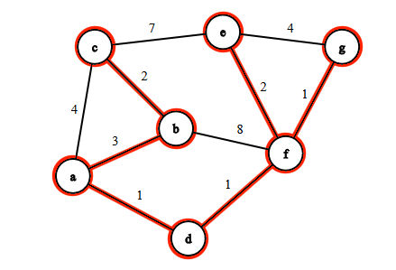

O algoritmo de Kruskal tem como finalidade determinar uma árvore geradora mínima para um dado grafo ponderado.
Uma árvore é um grafo conexo e acíclico.
Uma árvore geradora mínima de um grafo G é um grafo conexo e acíclico T tal que V(G) = V(T) e o somatório do peso de suas arestas é mínimo.

A imagem acima representa um grafo em que, destacada, está a sua árvore geradora mínima.
Trata-se de um algoritmo guloso, em que:
Critério α: Considerar a aresta de menor peso primeiro.
Propriedade P: Manter o grafo em construção acíclico.
Se na linha 5 utilizássemos uma busca com raíz u, detectando se v está no mesmo componente conexo que v, teríamos complexidade O(n+m) para cada aresta, e obtendo no final uma complexidade de O(m²).
Com a finalidade de diminuir a complexidade do algoritmo, utilizamos a estrutura UNION-FIND.
Dessa maneira, o algoritmo pode ser adaptado:
Imagem retirada de https://stackoverflow.com/questions/1195872/when-should-i-use-kruskal-as-opposed-to-prim-and-vice-versa